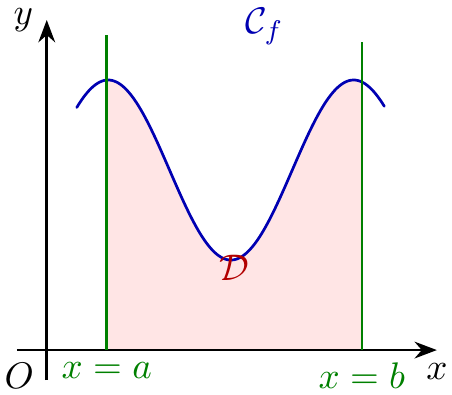
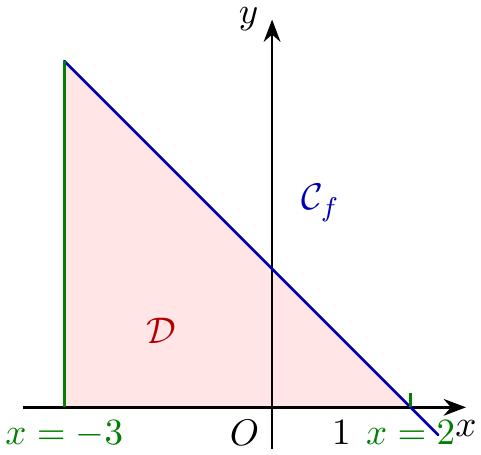
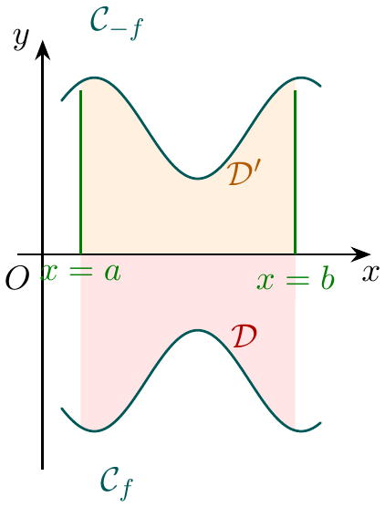
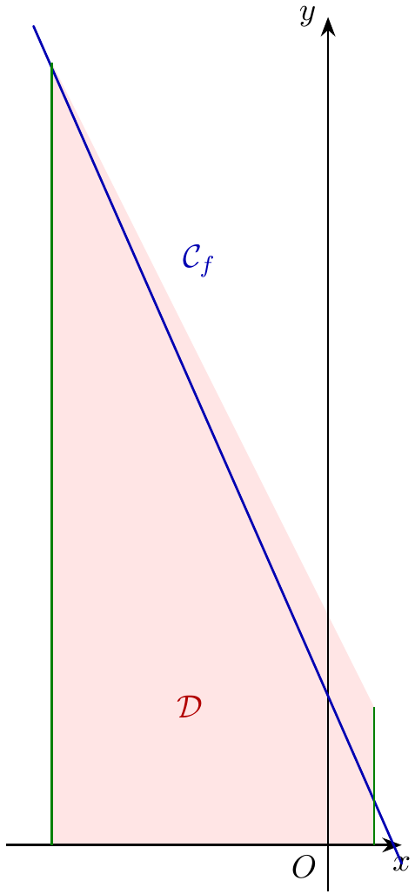
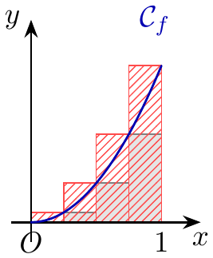
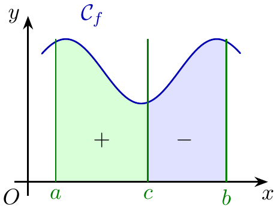
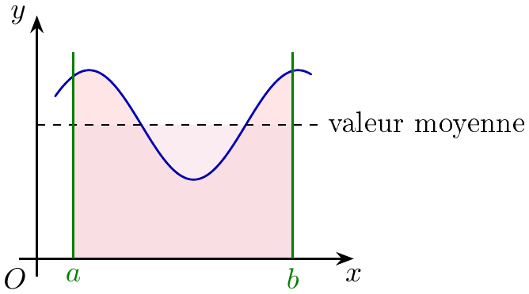
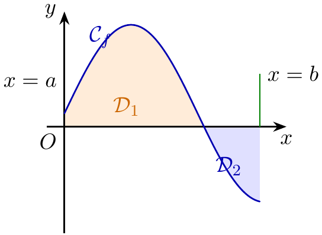
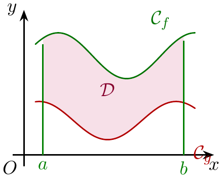

Chapitre 9 : Intégration
Terminale complémentaire · Chapitre 9 — Intégration · cours de Frederik de Peyrelongue
I. Définition
1.1 Définition
Soit $f$ une fonction continue et positive sur un intervalle $[a\,;b]$. Soit $\mathcal{C}_{f}$ sa représentation graphique dans un repère orthonormal $(O,I,J)$.
On appelle :
- unité d'aire (u.a.) : l'aire du rectangle construit à partir des points $O$, $I$ et $J$ ;
- domaine sous la courbe : le domaine délimité par la courbe $\mathcal{C}_{f}$, l'axe des abscisses et les droites d'équation $x=a$ et $x=b$ ;
- intégrale de $f$ sur $[a\,;b]$ : la mesure de l'aire en u.a. du domaine situé sous la courbe $\mathcal{C}_{f}$.
On note $\displaystyle\int_{a}^{b}f(x)\dx$.
Remarque. Le signe $\int$ de l'intégrale est un signe de somme : $f(x)\times \mathrm{d}x$ est l'aire d'un rectangle de hauteur $f(x)$ et de largeur $\mathrm{d}x$. Comme $x$ varie de $a$ à $b$, l'intégrale est une somme de petits rectangles sous la courbe $\mathcal{C}_{f}$.

Cas particulier. Si $a=b$, alors $\displaystyle\int_{a}^{a}f(x)\dx=0$.
On définit la fonction $f$ sur $\R$ par $f(x)=2-x$.
Le domaine $\mathcal{D}$ ci-dessous est un triangle rectangle de base $5$ et de hauteur $5$. D'où

1.2 Variable muette
La variable sous le signe intégrale est dite muette : on peut la changer par une autre variable.
Si $f$ est une fonction continue et négative sur $[a\,;b]$, alors l'aire du domaine $\mathcal{D}$ en u.a. est
Si $f$ est continue et négative sur $[a\,;b]$, alors $-f$ est une fonction continue et positive sur $[a\,;b]$. On note $\mathcal{D}'$ le domaine délimité par $\mathcal{C}_{-f}$. On a
Par symétrie par rapport à l'axe des abscisses, les aires des domaines $\mathcal{D}$ et $\mathcal{D}'$ sont égales, donc

On définit la fonction $f$ sur $\R$ par $f(x)=5-2x$. On note $\mathcal{C}_{f}$ sa courbe représentative dans un repère orthonormé d'unité $2$ cm.
- Calculer l'aire du domaine $\mathcal{D}$ délimité par $\mathcal{C}_{f}$, l'axe des abscisses et les droites d'équation $x=-6$ et $x=1$, en u.a., puis en cm$^{2}$.
- En déduire la valeur de l'intégrale $\displaystyle\int_{-6}^{1}f(x)\dx$.
I.3 Méthode : calculer une aire
- Justifier la continuité et la positivité de $f$ sur $[a\,;b]$.
Tracer éventuellement $\mathcal{C}_{f}$.
- Appliquer les formules de calcul d'aire.
- Convertir 1 u.a. dans l'unité demandée.
- Si $f$ est une fonction négative, faire le lien entre l'aire du domaine et l'intégrale.
Correction.
1. $f$ est une fonction affine, donc elle est continue sur $\R$.
$f$ est décroissante car $m=-2<0$ et $f(1)=3$, donc sur $[-6\,;1]$ on a $f(x)\geqslant 3>0$.
2. On trace $\mathcal{C}_{f}$.

$\mathcal{D}$ forme un trapèze, donc
1 u.a. est l'aire d'un carré de $2$ cm, donc $1\ \text{u.a.}=4\ \text{cm}^{2}$, et
$f$ est positive, donc
1.3 Intégrale de Riemann
Soit $f$ une fonction continue et monotone que l'on suppose croissante.
L'idée de Riemann est d'encadrer l'aire du domaine délimité par $\mathcal{C}_{f}$ par deux séries de rectangles.
On divise l'intervalle $[0\,;1]$ en $n$ parties $\left[\frac{i}{n}\,;\frac{i+1}{n}\right]$, avec $i$ un entier qui parcourt $\{0\,;1\,;\dots\,;n-1\}$.
Sur $\left[\frac{i}{n}\,;\frac{i+1}{n}\right]$, comme $f$ est croissante,
Donc
En faisant la somme de chacun des termes pour $i$ allant de $0$ à $n-1$, on obtient :

$S_{n}=\frac{1}{n}\sum_{i=0}^{i=n-1}f\left(\frac{i}{n}\right)$ et $T_{n}=\frac{1}{n}\sum_{i=0}^{i=n-1}f\left(\frac{i+1}{n}\right)$ sont appelés sommes de Riemann.
Théorème admis. Lorsque la fonction $f$ est continue, les sommes $S_{n}$ et $T_{n}$ de Riemann convergent vers la même limite, qui correspond à l'intégrale de $f$ sur $I$.
II. Primitives et intégrale
2.1 Dérivée de $x\longmapsto \int_{a}^{x}f(t)\dt$
Soient $f$ une fonction continue, positive et monotone sur un intervalle $I$, et $a\in I$. La fonction $F_{a}$, définie sur $I$ par
est la primitive de $f$ qui s'annule en $a$.
On va supposer que $f$ est croissante sur $I$ (si elle est décroissante, on travaille avec $-f$).
Montrons que $F_{a}'=f$.
Soient $x\in I$ et $h>0$ : on va calculer $\lim\limits_{h\to 0}\dfrac{F_{a}(x+h)-F_{a}(x)}{h}$.
Pour $t\in[x\,;x+h]$, on a $f(x)\leqslant f(t)\leqslant f(x+h)$ car $f$ est croissante.
Donc $\displaystyle\int_{x}^{x+h}f(t)\dt$ est minoré par l'aire du rectangle de hauteur $f(x)$ et de largeur $h$ : $f(x)\times h$.
Et $\displaystyle\int_{x}^{x+h}f(t)\dt$ est majoré par l'aire du rectangle de hauteur $f(x+h)$ et de largeur $h$ : $f(x+h)\times h$.
Donc
On sait que la fonction $f$ est continue, donc $\lim\limits_{h\to 0}f(x+h)=f(x)$.
D'après le théorème d'encadrement, $\lim\limits_{h\to 0}\dfrac{F_{a}(x+h)-F_{a}(x)}{h}=f(x)$, donc $F_{a}'=f$.
Théorème fondamental. Soient $f$ une fonction continue sur un intervalle $I$ et $a\in I$. La fonction $F_{a}$, définie sur $I$ par $F_{a}(x)=\displaystyle\int_{a}^{x}f(t)\dt$, est la primitive de $f$ qui s'annule en $a$.
2.2 Existence de primitive
Toute fonction $f$ continue sur un intervalle $I$ admet des primitives sur l'intervalle $I$.
2.3 Calcul d'intégrale à l'aide d'une primitive
Soient $F$ et $f$ deux fonctions telles que $F$ soit une primitive de $f$ sur $[a\,;b]$.
On a alors
Soit $F_{a}(x)=\displaystyle\int_{a}^{x}f(t)\dt$. $F_{a}$ est la primitive de $f$ qui s'annule en $a$, donc $F_{a}(x)=F(x)+k$.
Or
D'où $k=-F(a)$, donc
Calculer $\displaystyle\int_{1}^{5}x^{3}\dx$.
Une primitive de la fonction $x\longmapsto x^{3}$ est $F(x)=\dfrac{x^{4}}{4}$.
D'où
III. Propriétés de l'intégrale
3.1 Propriétés « vectorielles »
Soit $f$ une fonction continue sur un intervalle $I$. Alors :
- Pour tout $a\in I$, $\displaystyle\int_{a}^{a}f(x)\dx=0$.
- Pour tous $a$, $b\in I$, $\displaystyle\int_{b}^{a}f(x)\dx=-\int_{a}^{b}f(x)\dx$.
Relation de Chasles : pour tous $a$, $b$, $c\in I$,
\[ \int_{a}^{b}f(x)\dx=\int_{a}^{c}f(x)\dx+\int_{c}^{b}f(x)\dx . \]
Soit $F$ une primitive de $f$.
- $\displaystyle\int_{a}^{a}f(x)\dx=F(a)-F(a)=0$.
- $\displaystyle\int_{b}^{a}f(x)\dx=F(a)-F(b)=-\int_{a}^{b}f(x)\dx$.
- $\displaystyle\int_{a}^{c}f(x)\dx+\int_{c}^{b}f(x)\dx =F(c)-F(a)+F(b)-F(c)=F(b)-F(a)=\int_{a}^{b}f(x)\dx$.

3.2 Linéarité de l'intégrale
Soient $f$ et $g$ deux fonctions continues sur $I$, et $a$, $b$ deux réels appartenant à $I$. Soient $\alpha$ et $\beta$ deux réels. Alors
Soit $F$ une primitive de $f$ et $G$ une primitive de $g$.
Calculer $\displaystyle I=\int_{2}^{4}\left(5\e^{x}-\frac{3}{x-1}\right)\dx$.
3.3 Positivité de l'intégrale
Si $f$ est une fonction continue et positive sur $[a\,;b]$ avec $a\leqslant b$, alors
Si $f\geqslant 0$, alors $\displaystyle\int_{a}^{b}f(x)\dx$ est l'aire sous $\mathcal{C}_{f}$, donc elle est positive !
Attention !!! On peut aussi avoir $\displaystyle\int_{a}^{b}f(x)\dx\geqslant 0$ sans que $f$ demeure positive sur $[a\,;b]$.
Contre-exemple. Soit $f$ la fonction définie sur $\R$ par $f(x)=2x-1$.
a. Calculer $\displaystyle\int_{0}^{3}f(x)\dx$ :
b. Étudier le signe de $f$ sur $[0\,;3]$ :
Soient $f$ et $g$ deux fonctions continues sur $I=[a\,;b]$.
Si pour tout réel $x\in[a\,;b]$, $f(x)\leqslant g(x)$, alors
$g(x)-f(x)\geqslant 0$, donc d'après la positivité de l'intégrale, $\displaystyle\int_{a}^{b}\bigl(g(x)-f(x)\bigr)\dx\geqslant 0$ et, par linéarité, on obtient $\displaystyle\int_{a}^{b}g(x)\dx-\int_{a}^{b}f(x)\dx\geqslant 0$, d'où le résultat.
Remarque. Ce théorème permet de comparer deux intégrales sans forcément les calculer, ou d'encadrer une intégrale.
Encadrer :
3.4 Inégalité de la moyenne
Soit $f$ une fonction continue sur $I=[a\,;b]$ avec $a\leqslant b$, et soient $m$ et $M$ deux nombres réels tels que, pour tout $x\in I$, $m\leqslant f(x)\leqslant M$. Alors
On intègre l'inégalité :
Lorsque $a<b$, le nombre $\displaystyle\frac{1}{b-a}\int_{a}^{b}f(x)\dx$ est appelé valeur moyenne de $f$ sur $[a\,;b]$.
Interprétation graphique. Lorsque $f$ est positive, la valeur moyenne correspond à la hauteur du rectangle de côté $b-a$ et de même aire que $\mathcal{D}$.

La valeur moyenne de la fonction cube sur $[1\,;3]$ est
3.5 Calcul d'aire
Si $f$ est une fonction continue sur $[a\,;b]$, positive sur $[a\,;c]$ et négative sur $[c\,;b]$ (avec $a<c<b$), alors
où $\mathcal{D}_{1}$ est le domaine compris entre sa courbe représentative, l'axe des abscisses et les droites d'équation $x=a$ et $x=c$, et où $\mathcal{D}_{2}$ est celui délimité par $\mathcal{C}_{f}$, l'axe des abscisses et les droites d'équation $x=c$ et $x=b$.

Soient $f$ et $g$ deux fonctions continues sur $I$ telles que, pour tout $x\in I$, $f(x)\geqslant g(x)$. Soit $\mathcal{D}$ le domaine délimité par les courbes représentatives de $f$ et de $g$ sur $[a\,;b]$.
Alors l'aire de $\mathcal{D}$, en u.a., est égale à

IV. Intégration par parties
On considère deux fonctions $u$ et $v$ dérivables sur un intervalle $I$ telles que $u'$ et $v'$ soient continues sur $I$. Soient $a$ et $b$ deux réels de $I$ tels que $a<b$. Alors
Méthode. Lorsque le calcul d'une intégrale n'est pas possible directement avec une primitive, on peut utiliser une intégration par parties.
- Choisir judicieusement $u'$ et $v$ en justifiant la dérivabilité et la continuité des fonctions.
- Utiliser la formule d'intégration par parties.
- Calculer les intégrales pour conclure.
Application. Calculer $\displaystyle\int_{0}^{1}x\e^{x}\dx$.
Posons $u'(x)=\e^{x}$ et $v(x)=x$, donc $u(x)=\e^{x}$ et $v'(x)=1$.
Idée : 1) j'intègre, 2) je dérive ! On choisit de dériver la fonction qui peut disparaître, donc le plus souvent on dérive le polynôme (mais pas toujours !).